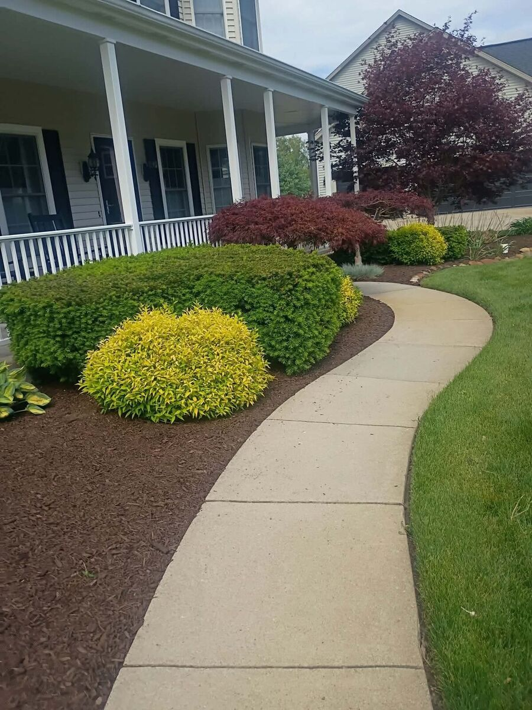

Lawn Maintenance
Mowing, trimming, edging, and blowing on a schedule that fits how the property is used.
- Weekly or bi-weekly visits
- Edges and walkways cut clean
- Clippings blown off hard surfaces
Locally owned & serving Niles, MI
Sulak's Landscaping does the mowing, trimming, edging, hardscape work, fence installs, and seasonal cleanups that keep a property looking sharp. Straightforward pricing, a phone that gets answered, and work finished when we say it will be.

What we do
Recurring maintenance or a one-time project — tell us what the property needs and we'll scope it in writing before any work starts.
Mowing, trimming, edging, and blowing on a schedule that fits how the property is used.
Permanent surfaces built to last, installed without wrecking the yard around them.
Privacy, boundary, and containment fencing for backyards, side yards, and pets.
Beds rebuilt, new beds designed, and plants chosen for Michigan conditions.
Spring and fall cleanups that get the property ready for the season and ready for winter.
Scheduled grounds maintenance for landlords, small offices, and rental portfolios.
Recent work
Photos from actual jobs — foundation bed renovations, custom walkways, mulch installs, and ornamental plantings. Select any photo to view it larger.
On the job
Photos taken mid-project — hardscape prep, weed-barrier installation, gravel base, excavation and grading, drainage work, and a before-and-after side-yard clearing. These are the less tidy parts of a job, and they're the part that decides whether the finished surface lasts.
Why Sulak's
We work in and around Niles every week. That means when something needs a fix or a question comes up mid-project, the answer comes from someone who can actually get to your property — not a call center.
On-site visits are easy — the lot at our office on Barron Lake Rd is wheelchair accessible, and we're glad to walk the property with you.
Business details
How it works
Tell us the address, what you want done, and roughly when. A quick photo helps if you have one.
We come out, look at the property, and talk through materials, scope, and timing.
You get a clear price in writing. Nothing starts until you approve it.
We schedule it, finish it, and clean up the site. Recurring work is set on a repeating schedule.
Questions
We're based in Niles and work throughout Niles and the surrounding communities in Berrien County. If you're a little outside that radius, call us — we may still be able to get to you.
Yes. Estimates are free and there's no obligation. For larger hardscaping or fence projects we walk the property first so the number you get is accurate.
That's the most common setup. We can set a weekly, bi-weekly, or per-visit schedule and keep it consistent, with a standing appointment for your address.
Both. We install new wood, vinyl, and chain link fencing along with gates, and we repair leaning, damaged, or broken runs on existing fences.
We're open Monday through Sunday, 7:00 AM to 9:00 PM. Spring and fall cleanup demand picks up around Michigan's shoulder seasons, so booking a little early is smart.
Yes — we're at 1314 Barron Lake Rd, Niles, MI 49120 with wheelchair-accessible parking. You're welcome to stop by and talk through a project in person.
Free quote
Fill this out and we'll follow up with questions, pricing, and the next available slot. For anything urgent, calling is fastest.
No obligation and no contract to sign. Most requests get a reply the same business day, and we can usually walk the property within a few days.